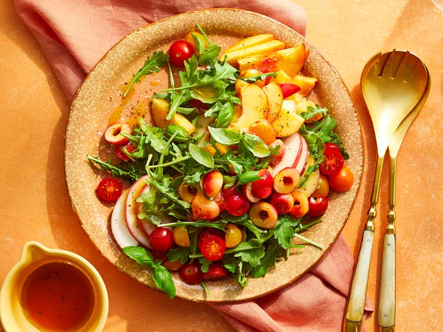

Homepage
Arugula Salad with Stone Fruit

Description
This juicy, vibrant arugula salad features fresh cherries, peaches, and
nectarines for a summery flavor. For an extra touch of sweetness, opt for
rosé vinegar, a rosé wine-based vinegar with a bright, fruity flavor.
Ingredients
- 2 tablespoons extra-virgin olive oil
- 2 tablespoons red wine vinegar or rosé vinegar
- 3/4 teaspoon salt
- 1/2 teaspoon black pepper
- 1 1/2 cups red cherry tomatoes, halved
- 1 1/2 cups yellow cherry tomatoes, halved
- 1 (5-ounce package) arugula
- 3/4 cup fresh basil leaves
- 2 nectarines, sliced
- 1 large white peach, sliced
- 1 cup Rainier or other yellow-flesh cherries, pitted and halved
- 1/2 teaspoon flaky sea salt
Steps
-
Whisk together olive oil, vinegar, salt, and pepper in a small bowl for
the dressing.
-
Arrange tomatoes, arugula, basil, nectarines, and peach slices on a
large platter. Drizzle with half the dressing. Top with cherries, sea
salt, and remaining dressing. Serve immediately.